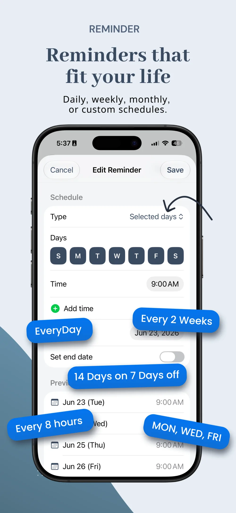

What to Do If You Forget Weekly GLP-1 Semaglutide Injection
Once-weekly GLP-1 and GIP/GLP-1 receptor agonists have a 5- to 7-day elimination half-life, which makes them far easier to manage than daily pills—until travel, busy weekends, or pharmacy refills cause you to forget your shot.
Because each brand has slightly different FDA prescribing rules for grace windows and minimum spacing between injections, guessing can either leave you under-dosed or trigger severe nausea from overlapping peaks. Use the clinical protocol table below to decide in seconds.
| Medication (Active Ingredient) | Take Missed Dose If... | Skip & Wait If... | Min. Spacing to Shift Shot Day | If 2+ Consecutive Weeks Missed |
|---|---|---|---|---|
| Ozempic (Semaglutide) | Within 5 days (120 hrs) of scheduled shot | More than 5 days have passed | At least 2 days (48 hrs) between doses | Resume schedule or consult prescriber if side effects are a concern |
| Wegovy (Semaglutide) | Next scheduled dose is > 2 days (48 hrs) away | Next scheduled dose is ≤ 2 days (48 hrs) away | At least 2 days (48 hrs) between doses | Resume schedule or ask clinician about stepping back down to avoid GI nausea |
| Mounjaro / Zepbound (Tirzepatide) | Within 4 days (96 hrs) of scheduled shot | More than 4 days (96 hrs) have passed | At least 3 days (72 hrs) between doses | Contact prescriber; restarting high doses (10–15 mg) often requires re-titration |
| Trulicity (Dulaglutide) | At least 3 days (72 hrs) until next shot | Fewer than 3 days (72 hrs) remain | At least 3 days (72 hrs) between doses | Resume at usual day; confirm dose tolerance with your care team |
1. Why You Must Never Double Up on a Weekly GLP-1 Shot
Semaglutide reaches peak plasma concentration roughly 24 to 72 hours after subcutaneous injection and remains active with a ~7-day half-life. Injecting two doses within 48 hours stacks overlapping drug peaks, sharply increasing the risk of intractable vomiting, dehydration, acute kidney stress, and hypoglycemia (especially if paired with insulin or sulfonylureas).
If you miss the cutoff window—for example, you notice on Day 6 that you forgot Ozempic—skip that week entirely. One skipped dose slightly lowers steady-state levels without erasing metabolic progress, and your next scheduled shot restores normal coverage safely.
2. How to Safely Shift Your Weekly Injection Day
Many patients intentionally move their GLP-1 injection day schedule—for instance, switching from Monday morning to Friday evening so mild post-shot fatigue happens over the weekend. FDA labeling allows you to change your injection day as long as you respect the minimum buffer:
- Semaglutide (Ozempic / Wegovy): Wait at least 48 hours (2 full days) after your previous injection before taking a dose on your new preferred day.
- Tirzepatide (Mounjaro / Zepbound) & Dulaglutide (Trulicity): Wait at least 72 hours (3 full days) between consecutive injections.
- Reset Your Recurring Schedule: Once you inject on the new day, that weekday becomes your permanent weekly anchor going forward.
Built into Supplement & Pill Reminder
Custom weekly and bi-weekly reminders
Handle complex dosing schedules like once-weekly injections or alternating day prescriptions seamlessly. Works offline with no account; your schedule, pen inventory, and dose history stay on your iPhone unless you back them up to your own iCloud.
Set Weekly GLP-1 Reminders Free on iOS →
3. Four Habits to Remember a Once-a-Week Shot Effortlessly
Daily supplements like evening magnesium rely on automatic bedtime muscle memory. Because a once-weekly injection only happens every seventh day, standard calendar alerts are easily swiped away and forgotten:
- Anchor to a Weekend Ritual: Tie your injection to an unmissable weekly cue—such as Saturday morning coffee or Sunday meal prep—rather than a rushed weekday commute.
- Log Your Injection Site: Rotating weekly between abdomen, thigh, and upper arm prevents lipohypertrophy (firm tissue lumps that blunt absorption). Record the site directly in your dose note.
- Log Every Shot as Taken: A generic calendar alert only tells you a dose was due. A dedicated weekly medication reminder app keeps a dose history, so on Day 4 or 5 you can check whether you actually injected instead of guessing—the same logic behind our missed pill protocol.
- Set Refill Warnings 5 Days Early: Many missed shots happen because of prior-authorization delays or pharmacy backorders. Track pen counts so refill alerts fire while one pen remains in the fridge.
4. A Simple Decision Checklist for a Missed Weekly Shot
When you realize a shot is late, answer three questions in order before you inject:
- Which drug is it? The window depends on the label: 5 days for Ozempic, 4 days for Mounjaro and Zepbound, the 48-hour rule for Wegovy, and 72 hours for Trulicity.
- When is my next scheduled dose? Count the hours, not just the days. A shot taken on Saturday night and the next one on Monday morning is less than 48 hours apart.
- Have I missed more than one week? After two or more missed weeks, call your prescriber before restarting, because they may lower the dose to limit nausea.
Write down the date and time of the late shot so you can see the spacing next week. For other dose-timing questions, see the full Pill Reminder guides library, or the Pill Reminder app page for how weekly and every-other-week schedules work.
Custom weekly and bi-weekly reminders
Handle complex dosing schedules like once-weekly injections or alternating day prescriptions seamlessly.
Download Pill Reminder on the App Store →Frequently Asked Questions
What happens if I take my weekly semaglutide shot a day late?
Usually nothing beyond normal side effects. One day late is inside the missed-dose window for every weekly GLP-1: within 5 days for Ozempic, and for Wegovy as long as your next dose is more than 48 hours away. Take it as soon as you remember, then go back to your usual day or keep the new day, as long as two doses are at least 48 hours apart.
What if I forget my weekly GLP-1 semaglutide injection for 5 or 6 days?
For Ozempic, if more than 5 days have passed since your missed dose, skip it and take your next dose on your regularly scheduled day. For Wegovy, skip the missed dose if your next scheduled injection is 48 hours or less away. Never take two doses within 48 hours.
Can I change my GLP-1 injection day without skipping a week?
Yes. You can change your weekly injection day anytime as long as you maintain at least 48 hours (2 days) between doses for Ozempic or Wegovy, or at least 72 hours (3 days) between doses for Mounjaro, Zepbound, or Trulicity.
How do I remember a once-a-week injection without missing doses?
Pair your shot with a consistent weekly anchor (like Sunday morning breakfast) and use a dedicated weekly medication reminder app with persistent snooze alerts and pen-count refill tracking so you never swipe away a notification before injecting.